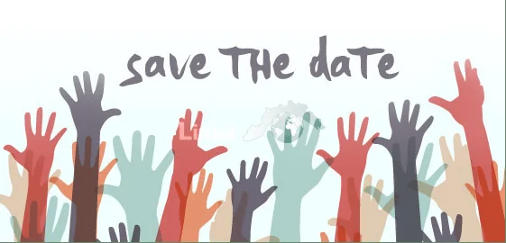

Come cambiano gli strumenti di pianificazione
Colui che frequenta la montagna ha da sempre cercato di pianificare il suo progredire e le sue escursioni utilizzando quello che la tecnica del tempo proponeva. Le biografie dei grandi sono un pozzo di esempi che vanno in questo senso.
I passi che si svolgono per pianificare una gita possono essere consci o inconsci. Prima si cerca l’idea, poi si prepara e si svolge la gita considerando più volte terreno, condizioni meteorologiche e fattore umano e per finire si rianalizza quanto successo nella fase di feedback.
Con il passare degli anni e come in tutti i campi, i metodi di pianificazione sono stati formalizzati e gli strumenti specifici affinati. Inoltre, la tecnologia informatica aiuta diventando sempre di più facile accesso. Attualmente il metodo standard utilizzato in fase di pianificazione è il “3×3”. Lo scopo è decidere se e come proseguire nell’attività dopo aver analizzato le condizioni, il terreno e gli elementi legati al fattore umano in modo continuo. Una prima volta a livello di pianificazione a partire dalle settimane precedenti l’attività, poi il giorno della gita durante l’avvicinamento (in auto o in capanna) e per finire a flusso continuo mentre si sta svolgendo l’escursione.
Per approfondire:
Invitiamo chi è interessato ad approfondire le proprie conoscenze sul tema alla lettura del documento edito dall’ufficio federale dello sport USFPO (www.jugendundsport.ch/3x3_pianificazione.pdf)
Nei prossimi capitoli analizzeremo quindi come le nuove tecnologie influenzano questo esercizio. Prima di parlare di come questi strumenti (siti web o applicazioni per smartphone) possono aiutarci nel processo di pianificare, è necessaria qualche premessa:
- le liste di siti o applicazioni non sono esaustive (si è dato rilievo a quelli specialmente utili in Svizzera);
- bisogna essere consapevoli che ogni sito ha delle caratteristiche proprie con vantaggi e svantaggi; il sito o applicazione ideale che serve a tutti i bisogni non esiste;
- non sono state considerate le condizioni di accesso all’informazione (libera, sottoposta a iscrizione o a pagamento);
- pianificare è un’arte complessa; gli strumenti a nostra disposizione sono un aiuto, ma rimangono solo uno strumento;
- gli strumenti di pianificazione non cambiano con l’avvento delle tecnologie digitali; semmai si completano e si trasformano in un processo di miglioramento continuo.
Altre notizie
Tutte le news
Convocazione Assemblea 2020
Caro Socio abbiamo il piacere di invitarti alla 136.ma Assemblea Generale Annuale che avrà luogo venerdì 11 giugno 2021 alle ore 18:00 c/o Cantori delle Cime Via alla Stampa 4, Canobbio a seguire, grigliata conviviale…

Gen. 2021 / COVID-19 / Aggiornamenti
Carissimi amanti della montagna, È nostra intenzione continuare a proporre attività all’aria aperta. Riteniamo che i benefici legati allo svolgimento di attività nella natura superino i rischi. Per rispettare le norme…
Ricerca di idee
La ricerca di idee è un processo personale, complesso. Possiamo utilizzare i motori di ricerca ( www.google.com ), i social ( www.facebook.com , www.instagram.com ) utilizzando come criteri di ricerca: nomi di montagne…